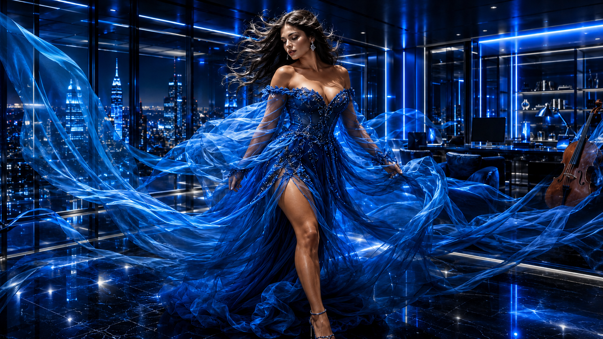
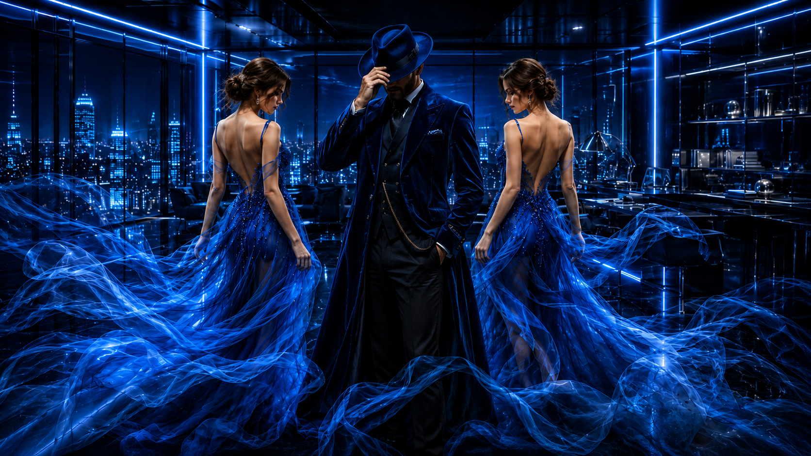
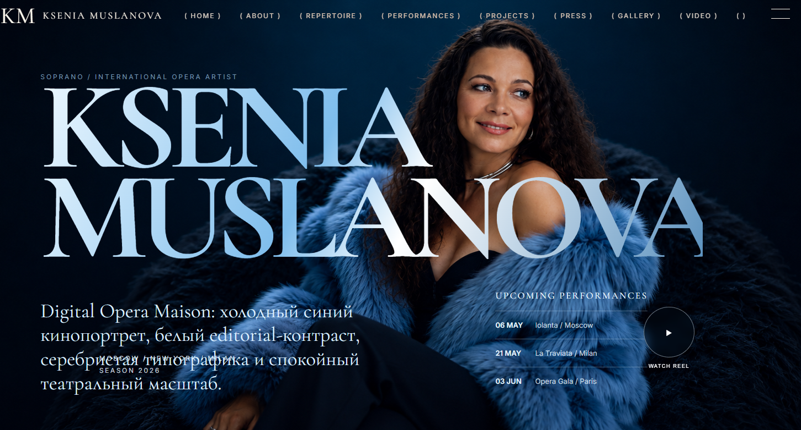
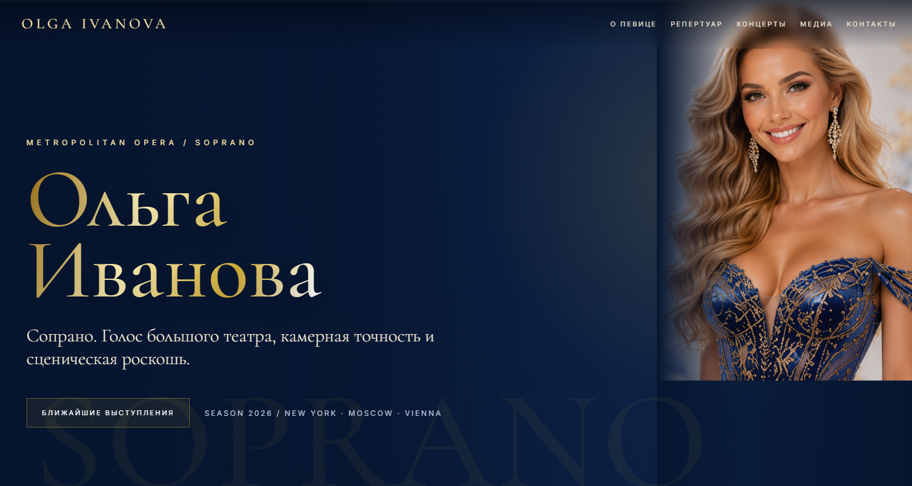
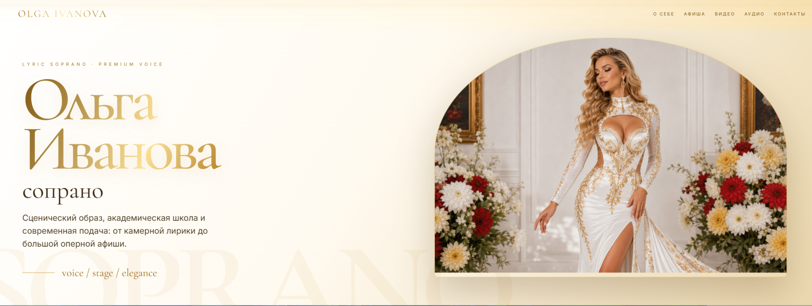
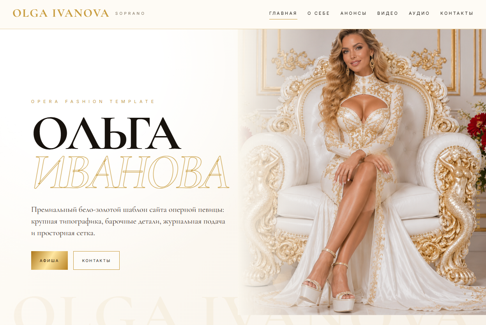
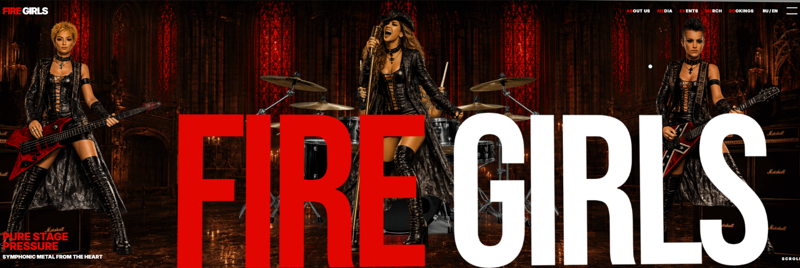

digital opera maison
Frontend · Music · Culture · Premium websites
KOOF
AGENCY
Минималистичные сайты для артистов, музыкантов, филармоний, фестивалей и авторских проектов. Без тяжёлой блочности: одна цельная визуальная система, крупная типографика, 3D-сцена и дорогой editorial-ритм.
Scroll
Creative direction
Сайт должен звучать.
Я соединяю frontend, музыкальную драматургию и визуальный дизайн, чтобы сайт выглядел как афиша большого театра, а не как набор стандартных секций.
В основе — крупный портрет, чистая сетка, тонкая типографика, 3D-акцент, спокойная анимация и ощущение сцены.
Формат подходит для оперных певцов, дирижёров, оркестров, рок-групп, фестивалей, конкурсов и культурных порталов.
Final scene
Сайт как премиальная сцена.
Артист, группа, филармония, конкурс, фестиваль или личный бренд — собираю визуальный мир, который можно сразу показывать зрителю, организатору и партнёрам.
Portfolio
Портфолио без шума.
Витрина работ сделана не сеткой ради сетки, а как длинная editorial-лента: крупное изображение, короткий смысл, быстрый переход.


Templates / white sphere
Белая витрина шаблонов.
Крупный hero, жёлто-золотой акцент, белая 3D-сфера и пять прямых переходов на готовые шаблоны.

01 / Ольга
Шаблон номер один
Открыть шаблон ↗
02 / Мария
Шаблон номер два
Открыть шаблон ↗
03 / Света
Шаблон номер три
Открыть шаблон ↗
04 / Николай
Шаблон номер четыре
Открыть шаблон ↗
05 / Сюзанна
Шаблон номер пять
Открыть шаблон ↗Contact
Запустить сайт как сцену.
Напишите, что нужно собрать: артист, группа, фестиваль, филармония, каталог, афиша или личный бренд.